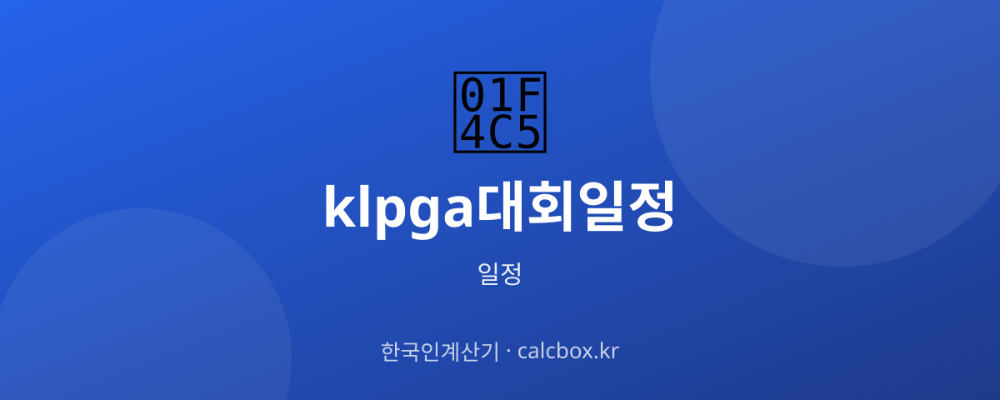

KLPGA 대회 일정 확인법 — 여자프로골프 투어 일정 보는 법
국내 여자 프로골프의 무대 KLPGA 투어. 시즌 중 어떤 대회가 언제 열리고, 일정을 어디서 확인하는지 방법 중심으로 정리했습니다.

KLPGA(한국여자프로골프) 투어 일정, 무엇을 확인하나요?
KLPGA 투어는 한국여자프로골프협회가 주관하는 프로 대회 시리즈로, 시즌 동안 여러 개의 개별 대회(토너먼트)가 이어집니다. 대부분 목요일~일요일 나흘간 열리는 스트로크 플레이 방식입니다.
확인해야 할 것은 대회명·개최 골프장·라운드 날짜(예선 컷·최종일)입니다. 대회마다 장소와 날짜가 다르고, 시즌 전체 일정표가 개막 전에 발표됩니다.
최신 일정 확인하는 법
시즌 전체 대회 일정과 개별 대회 상세는 KLPGA 공식 홈페이지에서 가장 정확하게 확인할 수 있습니다. 대회 리더보드(중간 순위)도 공식 채널에서 제공됩니다.
빠르게 보려면 포털 스포츠의 골프 코너에서 KLPGA 일정 탭을 확인하면 다음 대회와 최근 결과를 볼 수 있습니다.
- KLPGA 공식 홈페이지(시즌 일정·리더보드)
- 네이버 스포츠 골프 일정
- 대회 중계 방송사(골프 채널 등)
중계·관람·예매 정보
중계는 주로 골프 전문 채널에서 라운드별로 편성됩니다. 대회에 따라 방송 시간과 채널이 다르니 대회 주간에 편성표를 확인하세요.
갤러리(현장 관람)가 가능한 대회는 입장·주차·관람 규정이 대회별로 다릅니다. 현장 관람을 원하면 대회 안내를 미리 확인하세요.
알아두면 좋은 포인트
골프 대회는 날씨(우천·강풍)에 민감해 라운드가 순연되거나 경기 방식이 조정될 수 있습니다. 최종일 일정이 바뀌기도 합니다.
보통 이틀 경기 후 컷으로 진출 선수를 가리고 남은 이틀로 우승자를 정합니다. 특정 선수의 최종일 경기 여부는 컷 통과 결과에 따라 달라집니다.
자주 묻는 질문 (FAQ)
Q. KLPGA 대회 일정은 어디서 보나요?
시즌 전체 일정과 개별 대회 장소·날짜, 리더보드는 KLPGA 공식 홈페이지가 가장 정확합니다. 다음 대회를 빠르게 보려면 포털 스포츠의 골프 일정 탭도 편리합니다.
Q. 대회는 보통 며칠간 열리나요?
대부분 목요일부터 일요일까지 나흘간 스트로크 플레이로 진행되며, 이틀 경기 후 컷으로 진출자를 가리는 방식이 일반적입니다. 다만 대회에 따라 일정이 다를 수 있습니다.
Q. 비가 오면 일정이 바뀌나요?
골프는 날씨 영향을 크게 받아 우천·강풍 시 경기가 지연되거나 라운드가 순연될 수 있습니다. 최종일 일정이 조정되기도 하니, 악천후가 예상되면 공식 공지를 확인하세요.